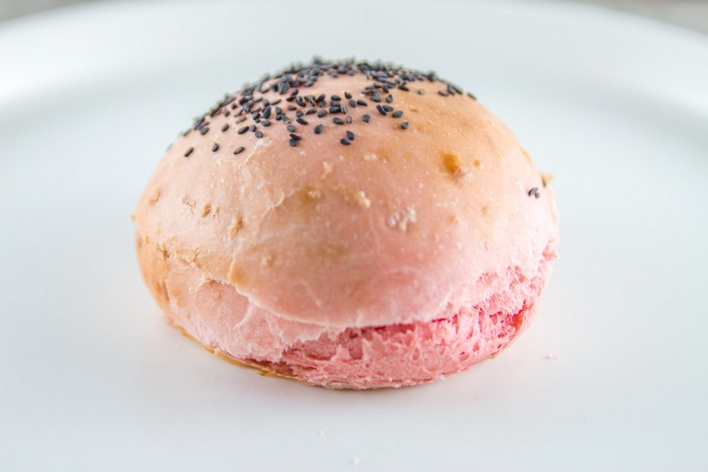
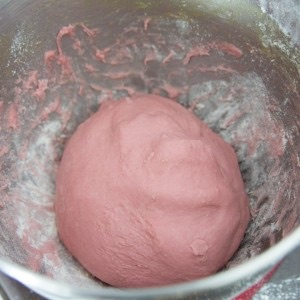
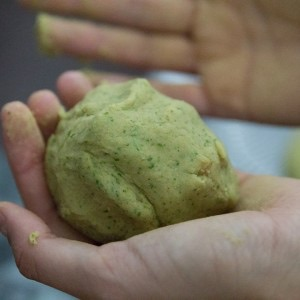
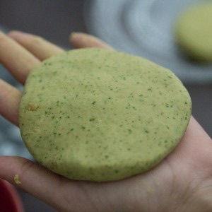
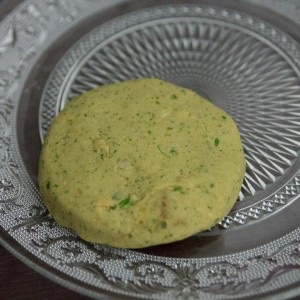

Burger rose et steak végétarien

Hello tout le monde!! Aujourd’hui je vous retrouve avec une nouvelle folle expérience que j’ai réalisée il n’y a pas très longtemps. En effet, si vous me suivez sur instagram, vous avez dû voir un aperçu de ma recette de burger rose!
Cette recette est totalement une pure invention et si vous cherchez d’ailleurs sur internet je pense que vous ne trouverez rien sur le sujet (sauf si vous êtes plus chanceux que moi^^) alors je suis partie à l’aveuglette sans trop de pistes à suivre. Pour la petite histoire, il y a peu de temps j’ai vu passer une photo de burger coloré et je me suis dit que moi je voudrais manger un burger rose! Comme il était hors de question que j’utilise des colorants chimiques je me suis dit que la betterave devrait arriver à colorer mon pain hamburger sans trop donner de goût! Si Gontran Cherrier arrive à colorer son pain burger en noir avec de l’encre de seiche il n’y a pas de raison que je ne colore pas le mien en rose avec une betterave. Je vous avoue que j’y suis allée à tâtons ne sachant pas trop dans quelle direction j’allais. Vous vous doutez bien aujourd’hui que si je publie ma recette c’est que ce fut un succès!!!
Le hic c’est que je rajoute de la farine dans ma pâte pour rééquilibrer un peu le tout et que je n’ai pas pesé cette quantité de farine (mais promis la prochaine fois je pèse et je rajoute ça même si ce n’est absolument pas nécessaire à la réussite de la recette, soyez rassurés vous comprendrez pourquoi plus bas). La betterave n’a apporté quant à elle aucun goût, juste de la couleur et c’est exactement ce que je voulais!!
La composition de mon burger est assez simple. Il y a un steak végétarien préparé avec des pois chiches (d’ailleurs dans le même esprit le burger falafel devrait vous plaire), du fromage, une sauce au tahine, une tomate et de la salade!
Si vous aussi vous avez envie de manger un bon burger rose je vous laisse maintenant lire tranquillement la recette!
Ingrédients
- Farine - 680g + qques cuillères à soupe
- Levure boulangère instantanée - 2 càc
- Sucre en poudre - 4 càs
- Sel - 2 càc
- Lait - 180ml + 2càs
- Beurre - 50g
- Jaune d'oeuf - 4
- Eau - 140ml
- Betterave - 1
- Pois chiche - 400g
- Echalote - 2
- Ail - 1 gousse
- Coriandre - 1 petit bouquet
- Cumin - 1 grosse cuillère à soupe
- Cuillère à soupe de farine de votre choix - 2 càs et demi
- Fromage Halloumi (ou fromage à griller type Salakis) - 180g
- Tahine - 2 càs
- Yaourt grec (mais un yaourt classique convient aussi) - 1
- Tomate - 1
- Salade
- Gousse d'ail (facultatif) - 1
Instructions
- Dans un premier temps, mettre la betterave dans un blender et réduisez-la en jus
- Passer le jus au chinois pour enlever les résidus de betterave
- Réserver le jus de betterave
- Suivre la recette des pains hamburgers ICI et revenez ici à l'étape : "Quand la pâte est bien élastique former une boule bien lisse"
- Quand vous avez obtenu votre boule de pâte, ajouter petit à petit du jus de betterave tout en mélangeant
- Votre pâte va se colorer progressivement mais va aussi perdre sa consistance
- Au fur et à mesure que vous ajoutez du jus de betterave il faut donc aussi ajouter progressivement de la farine
- Une fois votre boule de pâte formée, huiler un récipient et y mettre votre boule puis couvrir à l'aide d'un film alimentaire
- Laisser reposer pendant 1h30 à température ambiante, la pâte doit doubler de volume
- Reprendre votre boule et la découper en parts égales (j'en fais 6 d'environ 188g chacune) Ne soyez pas étonnés si vous trouvez vos boules trop petites avant d'enfourner car elles vont bien grossir pendant la cuisson
- Faire 6 boules et les placer sur votre plaque de cuisson recouverte de papier sulfurisé
- Couvrir d'un torchon et laisser à nouveau reposer pendant 1h
- Préchauffer le four à 220°
- Badigeonner les boules d'un peu de lait et saupoudrer de graines de sésame ou de pavot ou de ce que vous voulez!
- Enfourner alors pour 10 minutes
- Laisser refroidir pour ensuite les couper plus facilement
- Rincer et essorez bien les pois chiches
- Ajouter tous les ingrédients dans le bol de votre mixeur
- Mixer jusqu'à obtenir une pâte homogène
- Une fois les ingrédients mixés, ajouter le sel et le poivre et mixer à nouveau
- Former maintenant vos steaks. Peser votre pâte et divisez-la de manière à avoir des steaks de la taille que vous souhaitez. Moi j'ai fait de gros burgers alors j'ai fait trois gros steaks et des minis pour faire des minis burgers donc ça c'est à vous de voir
- Pour former vos steaks vous pouvez vous aider d'un emporte-pièce rond ou vous pouvez facilement les aplatir avec la paume de la main
- A feu moyen-fort, faites cuire vos steaks dans une poêle contenant un peu d'huile d'olive
- Compter environ 5-10 minutes de chaque côté
- Mélanger votre yaourt avec le tahine
- Ajouter 1 càc de jus de citron et la gousse d'ail écrasé
- Mélanger et réserver au frais en attendant
- Couper le fromage Halloumi (que vous pouvez remplacer par du fromage à griller type "grillis" de la marque "Salakis") en un gros morceau de la taille du burger
- Faites le griller dans une poêle et réserver
- Couper le pain en deux
- Étaler un peu de sauce tahine sur les deux parties du pain
- Déposer un peu de salade et une à deux rondelles de tomates sur le pain inférieur
- Poser un steak sur le dessus puis la tranche de fromage griller
- Recouvrir du chapeau et déguster sans plus attendre!!! Vous pouvez rechauffer vos burgers dans un four chaud quelques minutes avant de déguster





Les tips de la communauté
Burger végétarien au concept original avec pain rose à la betterave. Très apprécié pour l'originalité de la couleur et l'équilibre avec les falafels. Quelques questions pratiques sur l'intégration du jus de betterave.
Astuces
- La couleur rose vient du jus ou purée de betterave intégré à la pâte
- Possibilité d'utiliser du jus de betterave nature du commerce pour simplifier
- Ajouter le jus après formation de la boule pour meilleure incorporation
- Les proportions: betterave 225g donne 16 beaux buns
Variantes suggérées
- Augmenter la coloration avec des steaks de betterave complets
- Adapter les accompagnements sur le concept général
Ajustements signalés
- Intégrer le jus de betterave durant la phase liquide initiale plutôt qu'en fin de malaxage pour meilleure répartition